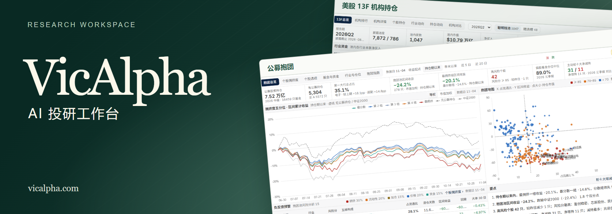
VicAlpha · AI-Native Investment Research
A research workspace designed for institutional investment workflows
Research markets, develop strategies and build research desks in natural language. Describe a signal and VicAlpha tracks the condition in real time, alerting you when it fires.
The multi-market database covers US, Hong Kong and mainland China equities, ETFs and funds. A research knowledge base provides context for company analysis, holdings research and backtests.
Sector rotation “Which industries are seeing accelerating inflows? Put them on a desk, backtest a rotation strategy, and alert me when an industry qualifies.”
Start your investment research workflow with VicAlpha.
✨ Capabilities · 🏛️ Architecture · 📊 Research desks · 🧪 Strategies · 📡 Signals
简体中文 | English | 繁體中文
✨ Core capabilities
| 🔎 Research |
📊 Strategy development |
📡 Monitoring |
| 15 research Skills · Company, financial, market and flow analysis |
Natural-language strategies · Define selection and timing rules and backtest them |
Live signals · Filter by direction, strength and event |
| 19 desk entries · Build or explore thematic workspaces |
Public strategies · Inspect rules, NAV, drawdowns and groups |
Scheduled research · Run on trading days or a custom schedule |
🏛️ Platform structure
Market data and the knowledge base supply research inputs. Sandbox provides a research execution environment. The workspace brings these together for analysis, desk construction, strategy development and monitoring.
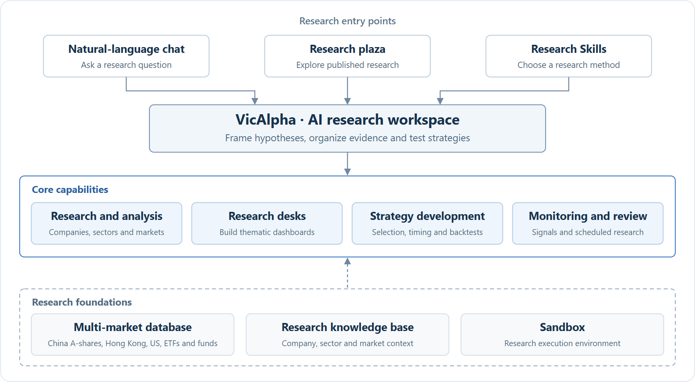
View Mermaid source
💬 Research workspace and plaza
Ask a question and follow the evidence in the same conversation. For example, “Did a few large semiconductor stocks drive today’s advance, or did most constituents participate?”
Browse market reviews, industry-chain reports and strategy research in the plaza. In your workspace, each research artifact retains a path to its source conversation.
Start your first research session ↗
| Entry |
Use |
| Research plaza |
Discover published research by artifact type. |
| Workspace |
Develop a hypothesis and revisit the discussion behind a result. |

Discover published research | 
Start a research conversation |
🧩 Research Skills
Choose from 15 official templates, then specify the security, reporting period and hypothesis. Try “Review this company’s financial statements and check whether management delivered on its prior commitments.”
Choose a research Skill ↗
| Category |
Templates |
Examples |
| Company analysis |
6 |
Company briefs, financial reviews, technical analysis and investment theses. |
| Market research |
4 |
Closing reviews, market regimes and themes for the next session. |
| Capital flows |
3 |
Flows, state-backed investors and exchange trading disclosures. |
| Research desks |
2 |
Ongoing investigation of a theme. |
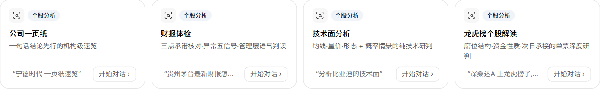
📊 Research desks
Build a desk by describing the question, indicators and signals you want to follow. For example, “Build a sector-rotation desk with market breadth, industry flows and timing signals.”
You can also open a ready-made desk in the research plaza. The discovery directory listed 19 desks on 5 November 2026. Names below link directly to the platform. Some require sign-in.
Build your first research desk ↗
Markets and strategies
| Research desk |
Research question |
Views and topics |
| A-share market screen |
Which sectors drive the market? |
Prices, sentiment, sectors, flows, exchange trading disclosures |
| Sentiment thermometer |
How hot or cold is the market? |
Overview, dimensions, indicators, signal events, historical reviews |
| Limit-up monitor |
Which themes sustain consecutive limit-up moves? |
Sentiment, streak ladder, themes, stocks, next-day outcomes |
| XHN A-share timing |
When do early, concurrent and exit signals agree? |
Overview, early entries, trend tracking, exits, methodology, indicators |
| Contrarian investing |
Where is weak sentiment turning? |
Overview, market temperature, sectors, candidates, traps, turning points |
| A-share industry chains |
How do suppliers and customers fit together? |
Choose a chain and explore upstream, midstream and downstream products |
Flows and trading structure
| Research desk |
Research question |
Views and topics |
| Daily A-share flow report |
How do supply, demand and breadth interact? |
12 report sections covering conclusions, new demand, supply, direction, absorption, participants, behavior, breadth, trends, phases, trading and definitions |
| A-share capital flows |
Which channels and sectors drive flows? |
Overview, large trades, sectors, stock heatmap, margin, cross-border flows, ETFs, exchange disclosures, corporate activity |
| A-share margin financing |
Where is leverage building? |
Overview, leverage cycle, industry and stock financing, risk monitoring, stock detail |
| A-share cost basis |
How do investor costs vary across sectors? |
Market overview, sector costs, screening, stock detail |
| A-share trading crowding |
Which trades are most crowded? |
Market, industries, styles, stocks, institutional holdings and detail views |
| Equity supply |
How do issuance, disposals and buybacks affect supply? |
Listed in discovery. The platform currently marks this desk as unavailable. |
| Equity ETF flows |
How do ETF subscriptions affect constituent demand? |
Listed in discovery. The platform currently marks this desk as unavailable. |

Daily flow overview | 
Sector flows |
View flow trends and market phases
Institutions and holdings
| Research desk |
Research question |
Views and topics |
| Fund crowding |
How concentrated are fund holdings? |
Overview, stock crowding, stock detail, fund flows, sector allocations, crowding index |
| A-share mutual fund holdings |
How do managers allocate across sectors? |
Overview, manager rankings, fund and stock holdings, sectors, heatmap, manager comparison |
| US institutional holdings (13F) |
Which institutions changed positions? |
Overview, institution rankings and profiles, stocks, sectors, position changes, institution comparison |
| State-backed investors |
How do ETFs and equity portfolios contribute? |
Overview, ETF support, portfolios, holdings, allocation changes, investor and stock detail |
| Top ten tradable shareholders |
Who owns the float and how concentrated is it? |
Overview, investor rankings and profiles, stock ownership, sectors, concentration and events |
| Institutional research visits |
Which companies attract institutional interest? |
Listed in discovery. The platform currently marks this desk as unavailable. |

Fund holdings and crowding | 
Quarterly 13F holdings |
🧪 AI strategy development and backtesting
Start with an investment hypothesis or an existing public strategy, then test the conditions under which the rule worked and the drawdowns it incurred.
Custom strategies
Specify the universe, benchmark, rules and parameters in plain language. For example, “Backtest a dual moving-average rule against the CSI 300. Compare returns and maximum drawdown across parameter choices.”
Start strategy development ↗
| Stage |
What to check |
| Define the test |
Universe, benchmark, entry and exit rules and parameter choices. |
| Read the report |
Returns, drawdown, Sharpe ratio, transaction rules and the distribution of outcomes. |
From an actual session: SuperTrend on a gold ETF. Strategy development is on the left and its report is on the right. From 8 September 2023 to 7 September 2026, the historical return was 29.29% and the maximum drawdown was 30.72%.
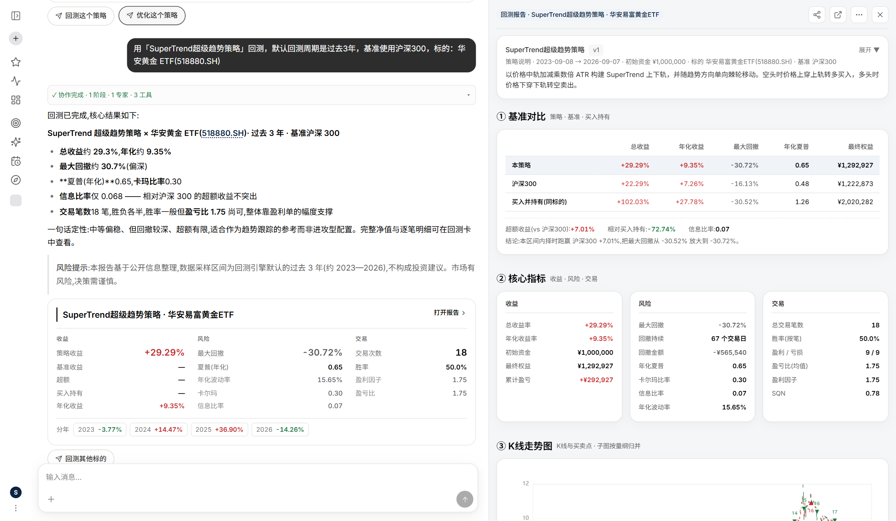
Public strategies
Use a public strategy as a starting point. Inspect its rules and historical report, or clone it for further research. For example, compare low price-to-book with the Piotroski F-Score and investigate how their drawdowns differ.
Explore the public strategy library ↗
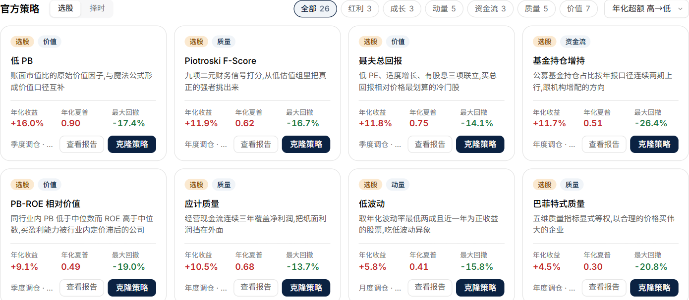
| Type |
Strategy |
Rule |
Historical report |
| Selection · Value |
Low price-to-book |
Screen for book value relative to market price. |
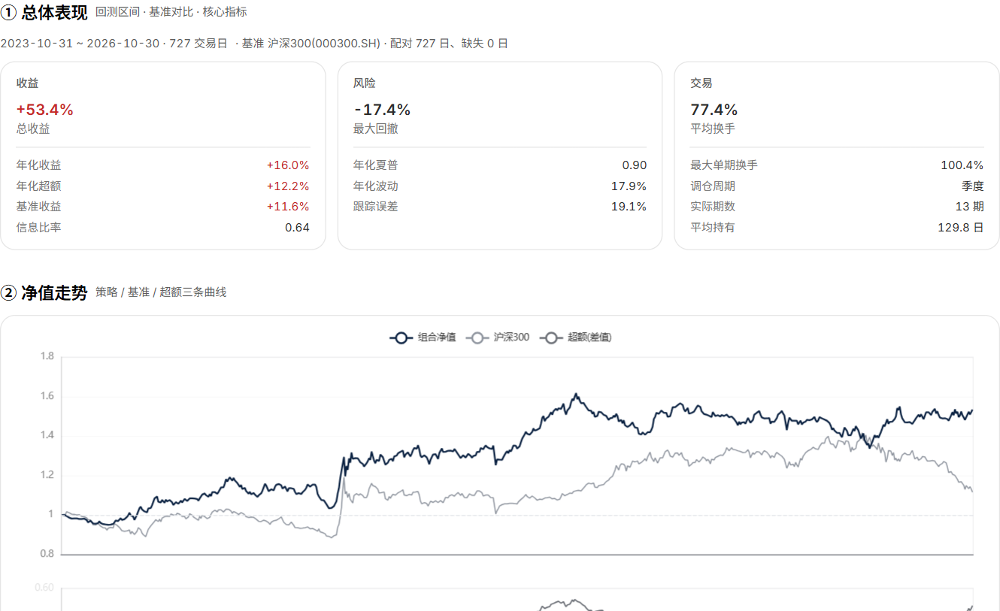 |
| Selection · Quality |
Piotroski F-Score |
Score financial strength using nine accounting signals. |
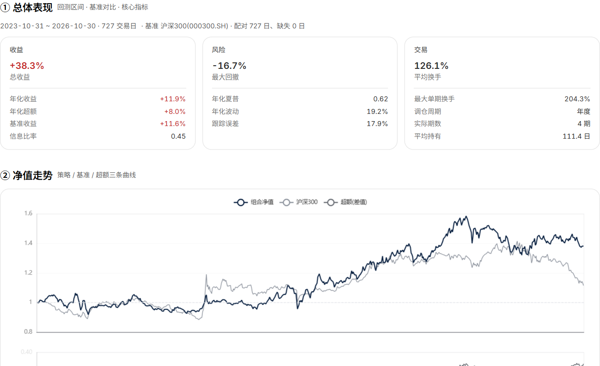 |
| Selection · Value |
Neff total return |
Combine low earnings multiples, moderate growth and dividends. |
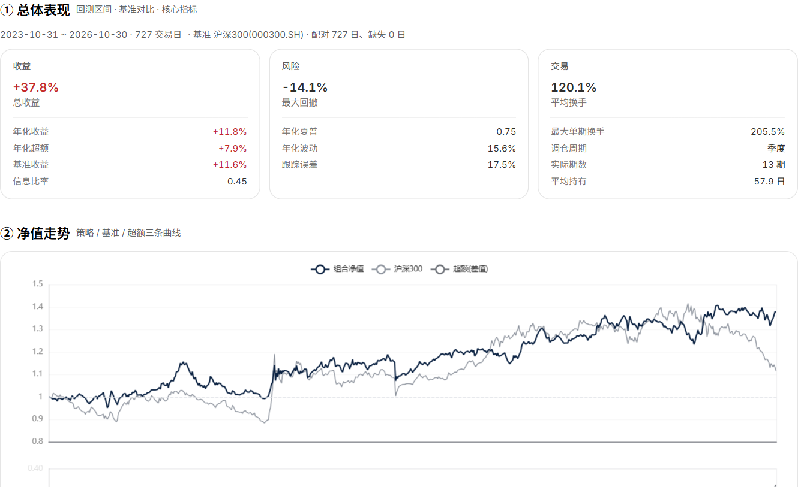 |
| Selection · Flows |
Increasing fund ownership |
Find companies with rising fund ownership for two reporting periods. |
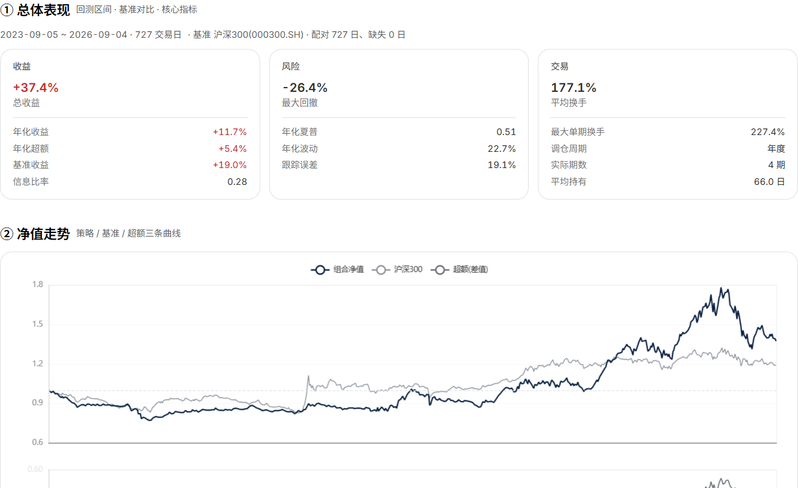 |
| Timing · Composite |
Hull moving-average trend |
Track changes in the direction of a smoothed Hull average. |
|
| Timing · Trend |
EMA crossover |
Follow crossings of short and long exponential moving averages. |
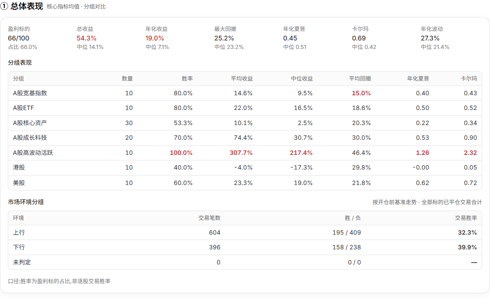 |
| Timing · Trend |
HalfTrend channel reversal |
Identify reversals using a smoothed high-low channel. |
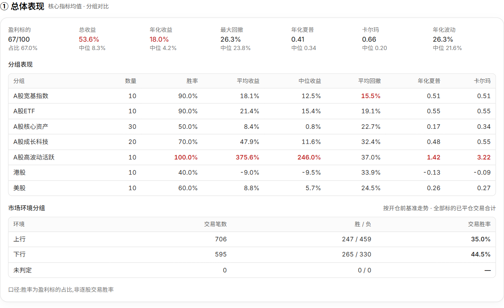 |
| Timing · Trend |
SuperTrend |
Track trend flips at ATR-based price bands. |
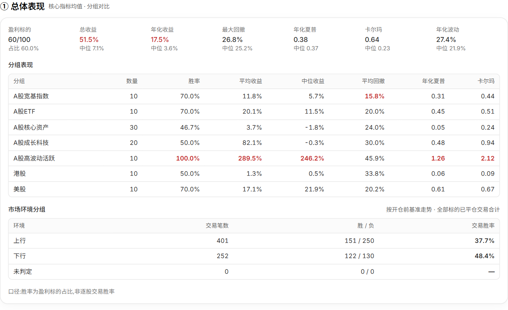 |
Selected historical results. Of the four examples shown in each category, low P/B led stock selection by annualized return (16.0%, maximum drawdown 17.4%). Hull trend led timing (19.1%, maximum drawdown 25.7%). The first is a portfolio result; the second averages 100 securities.
🔎 Equity research and monitoring
Compare stock performance with the underlying business. For example, “Did earnings and revenue move in step with the share price relative to the CSI 300?” The Kweichow Moutai overview below combines quotes, a benchmark comparison, company information and revenue composition.
Explore a stock research page ↗
| View |
Tools |
| Company research |
Financials, valuation, analyst expectations, shareholders, institutional ownership and events. |
| Price and trend |
Candlesticks, moving averages, Bollinger bands and price adjustments. |
| Volume and momentum |
Volume, MACD, KDJ and RSI. |
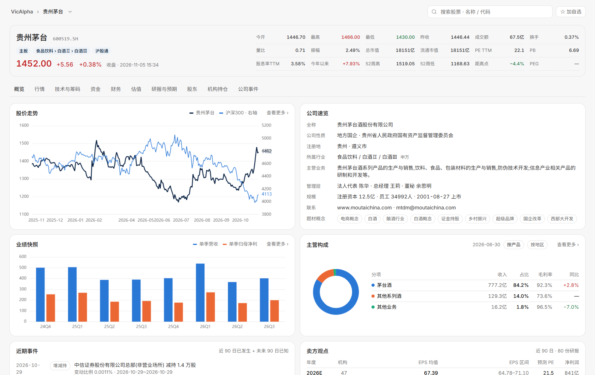
📡 Real-time signal alerts
Define a condition in natural language, such as “Alert me when a stock on my watchlist meets the entry rules for my timing strategy.” VicAlpha monitors the condition and alerts you when it triggers.
View market signals ↗
| Filter |
Choices |
| Signal source |
Strategy, technicals, patterns, price and volume, capital flows and events. |
| Display |
Filter by direction and strength, group by security, or switch between feed, list and heatmap. |
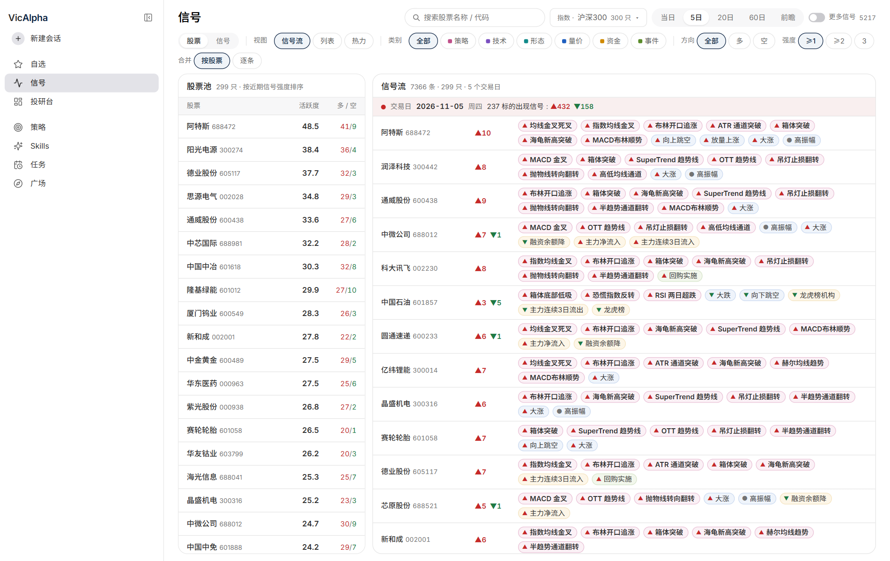
🗓️ Scheduled research
Turn a recurring question into a task. Try “After each trading session, review A-share market breadth, turnover and leading sectors.” Choose New task and describe the research and frequency.
Set up your first scheduled task ↗
| Task setting |
Options |
| Type |
Reports, stock selection, backtests, strategies and briefs. |
| Frequency |
Once, daily, each trading day, weekly, monthly or custom. |
| Status |
Enabled, paused, failed or stopped. |
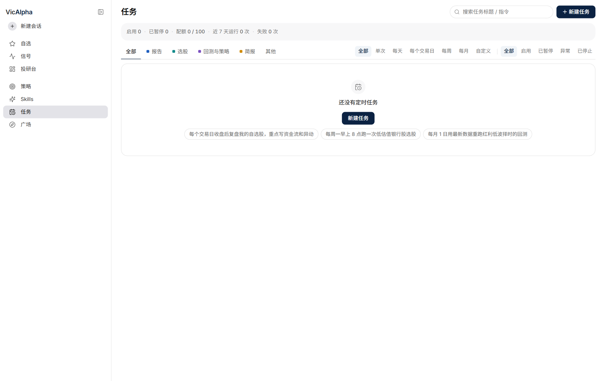
Open VicAlpha ↗